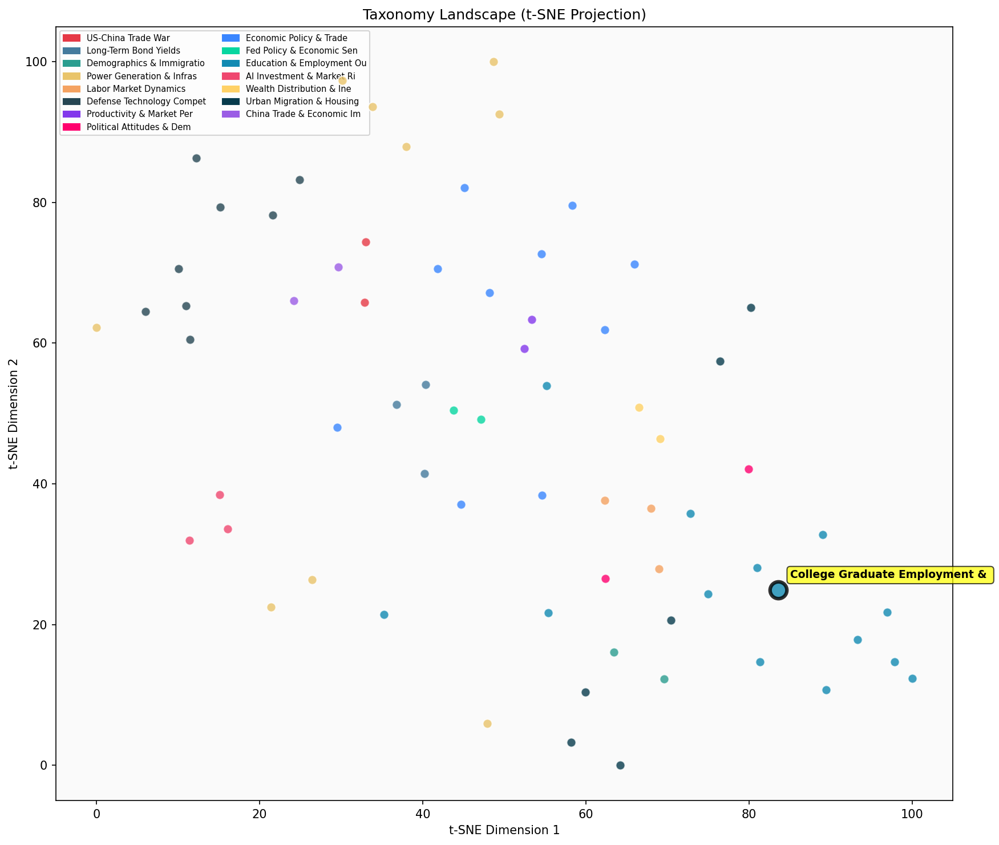

Description
This subcluster examines the evolving relationship between college education and labor market outcomes, particularly focusing on employment rates and wage premiums for recent graduates. Articles analyze unemployment statistics, enrollment trends, and the diminishing value of college degrees in securing well-paying employment. Common data sources include Bureau of Labor Statistics employment figures, college enrollment statistics, and wage surveys comparing degree holders to non-graduates. The content primarily features quantitative economic analysis and policy commentary. Unlike sibling subclusters examining academic performance metrics or generational wealth patterns, this cluster specifically targets the immediate post-graduation transition period and questions whether higher education investments yield expected returns in today's job market.
Similarity to All 70 Subclusters
Each cell represents a subcluster. Color intensity shows similarity (blue=low, red=high). Black line marks current subcluster position.
Relationship to Primary Clusters
Average similarity to each of the 15 primary clusters. Larger area = stronger relationship to that cluster.
Taxonomy Landscape
All 70 subclusters positioned by similarity (t-SNE). Current subcluster highlighted with label. Click to enlarge.
Network Connections
Current subcluster at center, connected to related subclusters. Line thickness = similarity strength.
Most Representative Articles
-
1. The college employment premium has vanished, with 40% of recent grads in roles not requiring a degre
-
2. The wage gap btw college and non-college workers expanded rapidly in the 1980s, but its growth has s
-
3. The median college graduate earns $80k annually relative to $47k for the median high school graduate
-
4. @PaulKrugman, according to his Wonk Out piece, the gap btw median male college graduate wages and th
-
5. College graduates' wages have remained flat this century after adjusting for inflation, while colleg
Edge Cases (Boundary Articles)
-
1. Ireland's free college experiment has led to a decline in its universities' international rankings,This article is borderline for the "College Graduate Employment & Wage Premiums" cluster because it focuses on the unintended consequences of Ireland's free college policy on university quality and international rankings, rather than directly examining employment outcomes or wage premiums for graduates. While the article touches on higher education policy, it doesn't analyze the core labor market outcomes that define this cluster, making it only tangentially related to the subcluster's focus on graduate employment and earnings.
-
2. English departments have lost 20% of their majors over the past decade.This article is borderline because while it mentions declining English majors, it doesn't directly discuss employment outcomes or wage premiums for college graduates, which is the core focus of this cluster. The article appears to be more about enrollment trends in specific academic disciplines rather than analyzing how college education translates to labor market advantages.
-
3. @JordanWeissmann Masters degrees have become a lucrative venture for universities, with students accThis article is borderline for the cluster because while it mentions master's degrees (higher education), its primary focus is on student debt regulation and financial policy rather than analyzing employment rates or wage premiums for graduates. The content aligns more with financial/lending concerns (hence the alternative banking cluster suggestion) than with labor market outcomes and the economic returns of college education.
Original Dendrogram